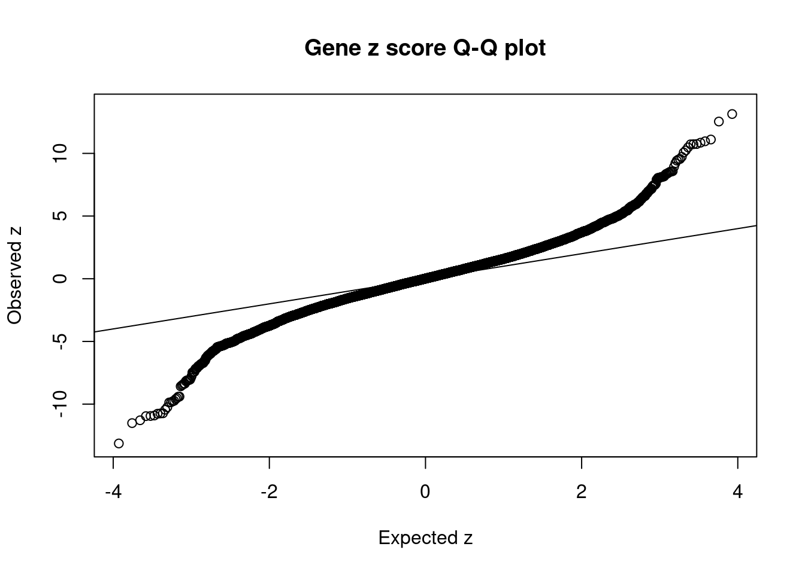

BMI - Brain Cortex
sheng Qian
2021-2-6
Last updated: 2022-02-22
Checks: 6 1
Knit directory: cTWAS_analysis/
This reproducible R Markdown analysis was created with workflowr (version 1.6.2). The Checks tab describes the reproducibility checks that were applied when the results were created. The Past versions tab lists the development history.
Great! Since the R Markdown file has been committed to the Git repository, you know the exact version of the code that produced these results.
Great job! The global environment was empty. Objects defined in the global environment can affect the analysis in your R Markdown file in unknown ways. For reproduciblity it’s best to always run the code in an empty environment.
The command set.seed(20211220) was run prior to running the code in the R Markdown file. Setting a seed ensures that any results that rely on randomness, e.g. subsampling or permutations, are reproducible.
Great job! Recording the operating system, R version, and package versions is critical for reproducibility.
Nice! There were no cached chunks for this analysis, so you can be confident that you successfully produced the results during this run.
Using absolute paths to the files within your workflowr project makes it difficult for you and others to run your code on a different machine. Change the absolute path(s) below to the suggested relative path(s) to make your code more reproducible.
| absolute | relative |
|---|---|
| /project2/xinhe/shengqian/cTWAS/cTWAS_analysis/data/ | data |
| /project2/xinhe/shengqian/cTWAS/cTWAS_analysis/code/ctwas_config.R | code/ctwas_config.R |
Great! You are using Git for version control. Tracking code development and connecting the code version to the results is critical for reproducibility.
The results in this page were generated with repository version 1058990. See the Past versions tab to see a history of the changes made to the R Markdown and HTML files.
Note that you need to be careful to ensure that all relevant files for the analysis have been committed to Git prior to generating the results (you can use wflow_publish or wflow_git_commit). workflowr only checks the R Markdown file, but you know if there are other scripts or data files that it depends on. Below is the status of the Git repository when the results were generated:
Ignored files:
Ignored: .ipynb_checkpoints/
Untracked files:
Untracked: Rplot.png
Untracked: analysis/.ipynb_checkpoints/
Untracked: analysis/Glucose_Adipose_Subcutaneous.Rmd
Untracked: analysis/Glucose_Adipose_Visceral_Omentum.Rmd
Untracked: analysis/Splicing_Test.Rmd
Untracked: code/.ipynb_checkpoints/
Untracked: code/AF_out/
Untracked: code/BMI_S_out/
Untracked: code/BMI_out/
Untracked: code/Glucose_out/
Untracked: code/LDL_S_out/
Untracked: code/T2D_out/
Untracked: code/ctwas_config.R
Untracked: code/mapping.R
Untracked: code/out/
Untracked: code/run_AF_analysis.sbatch
Untracked: code/run_AF_analysis.sh
Untracked: code/run_AF_ctwas_rss_LDR.R
Untracked: code/run_BMI_analysis.sbatch
Untracked: code/run_BMI_analysis.sh
Untracked: code/run_BMI_analysis_S.sbatch
Untracked: code/run_BMI_analysis_S.sh
Untracked: code/run_BMI_ctwas_rss_LDR.R
Untracked: code/run_BMI_ctwas_rss_LDR_S.R
Untracked: code/run_Glucose_analysis.sbatch
Untracked: code/run_Glucose_analysis.sh
Untracked: code/run_Glucose_ctwas_rss_LDR.R
Untracked: code/run_LDL_analysis_S.sbatch
Untracked: code/run_LDL_analysis_S.sh
Untracked: code/run_LDL_ctwas_rss_LDR_S.R
Untracked: code/run_T2D_analysis.sbatch
Untracked: code/run_T2D_analysis.sh
Untracked: code/run_T2D_ctwas_rss_LDR.R
Untracked: data/.ipynb_checkpoints/
Untracked: data/AF/
Untracked: data/BMI/
Untracked: data/BMI_S/
Untracked: data/Glucose/
Untracked: data/LDL_S/
Untracked: data/T2D/
Untracked: data/TEST/
Untracked: data/UKBB/
Untracked: data/UKBB_SNPs_Info.text
Untracked: data/gene_OMIM.txt
Untracked: data/gene_pip_0.8.txt
Untracked: data/mashr_Heart_Atrial_Appendage.db
Untracked: data/mashr_sqtl/
Untracked: data/summary_known_genes_annotations.xlsx
Untracked: data/untitled.txt
Unstaged changes:
Modified: analysis/BMI_Brain_Cortex.Rmd
Modified: analysis/LDL_Liver_S.Rmd
Modified: analysis/index.Rmd
Note that any generated files, e.g. HTML, png, CSS, etc., are not included in this status report because it is ok for generated content to have uncommitted changes.
These are the previous versions of the repository in which changes were made to the R Markdown (analysis/BMI_Brain_Hypothalamus_S.Rmd) and HTML (docs/BMI_Brain_Hypothalamus_S.html) files. If you’ve configured a remote Git repository (see ?wflow_git_remote), click on the hyperlinks in the table below to view the files as they were in that past version.
| File | Version | Author | Date | Message |
|---|---|---|---|---|
| Rmd | 1058990 | sq-96 | 2022-02-22 | update |
Weight QC
#number of imputed weights
nrow(qclist_all)[1] 23356#number of imputed weights by chromosome
table(qclist_all$chr)
1 2 3 4 5 6 7 8 9 10 11 12 13 14 15 16
2187 1624 1391 915 964 1243 1339 822 921 1040 1364 1154 441 791 748 1054
17 18 19 20 21 22
1559 319 1682 757 294 747 #number of imputed weights without missing variants
sum(qclist_all$nmiss==0)[1] 21465#proportion of imputed weights without missing variants
mean(qclist_all$nmiss==0)[1] 0.919#add z scores to results
load(paste0(results_dir, "/", analysis_id, "_expr_z_gene.Rd"))
ctwas_gene_res$z <- z_gene[ctwas_gene_res$intron_id,]$z
z_snp <- z_snp[z_snp$id %in% ctwas_snp_res$id,]
ctwas_snp_res$z <- z_snp$z[match(ctwas_snp_res$id, z_snp$id)]
#merge gene and snp results with added information
ctwas_snp_res$genename=NA
ctwas_snp_res$gene_type=NA
ctwas_snp_res$intron_id=NA
ctwas_res <- rbind(ctwas_gene_res,
ctwas_snp_res[,colnames(ctwas_gene_res)])
#get number of eQTL for geens
num_eqtl <- c()
for (i in 1:22){
load(paste0(results_dir, "/", analysis_id, "_expr_chr", i, ".exprqc.Rd"))
num_eqtl <- c(num_eqtl, unlist(lapply(wgtlist, nrow)))
}
ctwas_gene_res$num_eqtl <- num_eqtl[ctwas_gene_res$intron_id]
#store columns to report
report_cols <- colnames(ctwas_gene_res)[!(colnames(ctwas_gene_res) %in% c("type", "region_tag1", "region_tag2", "cs_index", "gene_type", "z_flag", "id", "chrom", "pos"))]
first_cols <- c("genename", "region_tag")
report_cols <- c(first_cols, report_cols[!(report_cols %in% first_cols)])
report_cols_snps <- c("id", report_cols[-1])
report_cols_snps <- report_cols_snps[!(report_cols_snps %in% "num_eqtl")]
#get number of SNPs from s1 results; adjust for thin argument
ctwas_res_s1 <- data.table::fread(paste0(results_dir, "/", analysis_id, "_ctwas.s1.susieIrss.txt"))
n_snps <- sum(ctwas_res_s1$type=="SNP")/thin
rm(ctwas_res_s1)Check convergence of parameters
#estimated group prior
estimated_group_prior <- group_prior_rec[,ncol(group_prior_rec)]
names(estimated_group_prior) <- c("gene", "snp")
estimated_group_prior["snp"] <- estimated_group_prior["snp"]*thin #adjust parameter to account for thin argument
print(estimated_group_prior) gene snp
0.0054948 0.0002901 #estimated group prior variance
estimated_group_prior_var <- group_prior_var_rec[,ncol(group_prior_var_rec)]
names(estimated_group_prior_var) <- c("gene", "snp")
print(estimated_group_prior_var) gene snp
22.86 17.36 #report sample size
print(sample_size)[1] 336107#report group size
group_size <- c(nrow(ctwas_gene_res), n_snps)
print(group_size)[1] 23356 7535010#estimated group PVE
estimated_group_pve <- estimated_group_prior_var*estimated_group_prior*group_size/sample_size #check PVE calculation
names(estimated_group_pve) <- c("gene", "snp")
print(estimated_group_pve) gene snp
0.00873 0.11289 #compare sum(PIP*mu2/sample_size) with above PVE calculation
c(sum(ctwas_gene_res$PVE),sum(ctwas_snp_res$PVE))[1] 0.4274 14.4758Genes with highest PIPs
genename region_tag susie_pip mu2 PVE
22750 DST 6_42 1.0000 14599.16 4.344e-02
22844 SLC38A2 12_29 1.0000 14762.51 4.392e-02
23098 TMOD3 15_21 1.0000 34316.74 1.021e-01
22721 NSD1 5_106 1.0000 13458.30 4.004e-02
23083 MOK 14_53 0.9813 9526.17 2.781e-02
23152 TNFSF12-TNFSF13 17_7 0.9167 28.79 7.851e-05
22630 SERPINI1 3_103 0.8119 25.28 6.107e-05
23270 ZNF559-ZNF177 19_9 0.7500 15880.52 3.544e-02
23271 ZNF559-ZNF177 19_9 0.7500 15880.52 3.544e-02
19459 ZBTB7A 19_4 0.7130 169.08 3.587e-04
19392 DOT1L 19_3 0.7077 24.87 5.236e-05
9639 SLC25A37 8_24 0.6929 27.12 5.590e-05
284 RP1-37C10.3 1_12 0.6895 28.65 5.877e-05
5144 DLG1 3_121 0.6889 23.82 4.883e-05
9030 PTCD1 7_61 0.6705 55.04 1.098e-04
22529 MAPK11 22_24 0.6664 24.75 4.907e-05
19870 CRTC1 19_15 0.6417 49.72 9.493e-05
50 MIB2 1_1 0.6334 51.32 9.672e-05
6253 C5orf64 5_37 0.6316 27.27 5.125e-05
22836 DENND1A 9_63 0.6217 30.06 5.560e-05
intron_id z num_eqtl
22750 intron_6_56468999_56469883 2.985 1
22844 intron_12_46367340_46370512 2.953 1
23098 intron_15_51938260_51947292 -4.591 1
22721 intron_5_177235945_177239756 -2.957 1
23083 intron_14_102265912_102283478 2.804 1
23152 intron_17_7559702_7560049 -4.225 1
22630 intron_3_167735823_167789111 -4.409 2
23270 intron_19_9364948_9371610 3.338 1
23271 intron_19_9364948_9376316 -3.338 1
19459 intron_19_4055247_4065430 -7.758 1
19392 intron_19_2199939_2202700 4.106 1
9639 intron_8_23529212_23566108 5.008 1
284 intron_1_16986358_16986805 4.915 1
5144 intron_3_197149796_197194425 -4.462 1
9030 intron_7_99429806_99433278 7.174 1
22529 intron_22_50267949_50270177 4.182 2
19870 intron_19_18743026_18744108 -6.969 1
50 intron_1_1628722_1629133 6.613 1
6253 intron_5_61704108_61730046 -3.939 1
22836 intron_9_123757822_123769514 4.837 1Genes with largest effect sizes
genename region_tag susie_pip mu2 PVE
19848 MAST3 19_14 0.000e+00 55987 0.000e+00
19849 MAST3 19_14 0.000e+00 51343 0.000e+00
10335 CCDC171 9_13 0.000e+00 48050 0.000e+00
19850 MAST3 19_14 0.000e+00 44887 0.000e+00
10336 CCDC171 9_13 0.000e+00 42064 0.000e+00
19852 MAST3 19_14 0.000e+00 41441 0.000e+00
19853 MAST3 19_14 0.000e+00 41441 0.000e+00
23098 TMOD3 15_21 1.000e+00 34317 1.021e-01
13009 MRPL21 11_38 2.188e-11 23136 1.506e-12
13011 IGHMBP2 11_38 1.443e-15 22844 9.809e-17
15926 CATSPER2P1 15_16 0.000e+00 22773 0.000e+00
4326 HEMK1 3_35 0.000e+00 19014 0.000e+00
4325 HEMK1 3_35 0.000e+00 19014 0.000e+00
4324 HEMK1 3_35 0.000e+00 19012 0.000e+00
4323 C3orf18 3_35 0.000e+00 19009 0.000e+00
13010 MRPL21 11_38 0.000e+00 18514 0.000e+00
15919 ADAL 15_16 0.000e+00 16855 0.000e+00
3374 RFTN2 2_117 0.000e+00 16713 0.000e+00
23270 ZNF559-ZNF177 19_9 7.500e-01 15881 3.544e-02
23271 ZNF559-ZNF177 19_9 7.500e-01 15881 3.544e-02
intron_id z num_eqtl
19848 intron_19_18107618_18121685 6.803 1
19849 intron_19_18110741_18121685 -7.147 1
10335 intron_9_15888088_15888983 -8.107 2
19850 intron_19_18118254_18121685 -6.233 1
10336 intron_9_15889101_15920270 -7.233 1
19852 intron_19_18147017_18147443 -6.726 1
19853 intron_19_18147044_18147443 6.726 1
23098 intron_15_51938260_51947292 -4.591 1
13009 intron_11_68898012_68900535 4.267 2
13011 intron_11_68929357_68933299 4.486 1
15926 intron_15_43744219_43744395 -4.508 1
4326 intron_3_50579740_50579844 4.698 1
4325 intron_3_50577573_50577826 -4.701 1
4324 intron_3_50572208_50577052 -4.704 1
4323 intron_3_50569574_50570931 4.682 1
13010 intron_11_68898012_68900548 -4.056 2
15919 intron_15_43351041_43351751 3.360 1
3374 intron_2_197646666_197675320 -6.263 1
23270 intron_19_9364948_9371610 3.338 1
23271 intron_19_9364948_9376316 -3.338 1Genes with highest PVE
genename region_tag susie_pip mu2 PVE
23098 TMOD3 15_21 1.00000 34316.7 0.1021006
22844 SLC38A2 12_29 1.00000 14762.5 0.0439221
22750 DST 6_42 1.00000 14599.2 0.0434360
22721 NSD1 5_106 1.00000 13458.3 0.0400417
23270 ZNF559-ZNF177 19_9 0.75000 15880.5 0.0354363
23271 ZNF559-ZNF177 19_9 0.75000 15880.5 0.0354363
23083 MOK 14_53 0.98132 9526.2 0.0278134
14627 SPG20 13_13 0.55556 12691.6 0.0209782
14625 SPG20 13_13 0.55556 12691.6 0.0209782
14626 SPG20 13_13 0.55556 12691.6 0.0209782
22873 RP11-386G11.5 12_31 0.57927 1617.3 0.0027874
1911 TATDN3 1_108 0.13827 3325.6 0.0013681
1909 TATDN3 1_108 0.12687 3324.5 0.0012549
1910 TATDN3 1_108 0.12687 3324.5 0.0012549
1908 TATDN3 1_108 0.12687 3324.5 0.0012549
1906 TATDN3 1_108 0.11321 3323.5 0.0011195
1907 TATDN3 1_108 0.10786 3323.3 0.0010665
16896 TNRC6A 16_21 0.41245 481.6 0.0005910
1904 TATDN3 1_108 0.05456 3323.0 0.0005395
1905 TATDN3 1_108 0.05454 3323.0 0.0005392
intron_id z num_eqtl
23098 intron_15_51938260_51947292 -4.591 1
22844 intron_12_46367340_46370512 2.953 1
22750 intron_6_56468999_56469883 2.985 1
22721 intron_5_177235945_177239756 -2.957 1
23270 intron_19_9364948_9371610 3.338 1
23271 intron_19_9364948_9376316 -3.338 1
23083 intron_14_102265912_102283478 2.804 1
14627 intron_13_36335832_36346582 2.819 1
14625 intron_13_36335832_36336287 2.819 1
14626 intron_13_36335832_36346240 -2.819 1
22873 intron_12_49005543_49005743 4.788 1
1911 intron_1_212812328_212815013 3.296 1
1909 intron_1_212807848_212812248 3.301 1
1910 intron_1_212807848_212812251 -3.301 1
1908 intron_1_212807848_212812227 -3.301 1
1906 intron_1_212804429_212804596 3.300 1
1907 intron_1_212804651_212807736 3.301 1
16896 intron_16_24805151_24805605 -5.878 1
1904 intron_1_212797196_212802701 3.275 1
1905 intron_1_212797196_212804320 3.275 1Genes with largest z scores
genename region_tag susie_pip mu2 PVE
1694 SEC16B 1_87 2.117e-02 157.12 9.896e-06
12527 BDNF-AS 11_19 5.029e-01 119.38 1.786e-04
12528 BDNF-AS 11_19 5.029e-01 119.38 1.786e-04
4297 RBM6 3_35 1.865e-03 908.78 5.042e-06
7387 C6orf106 6_28 3.514e-01 178.54 1.866e-04
2314 DNAJC27-AS1 2_15 4.919e-05 190.73 2.791e-08
7389 UHRF1BP1 6_28 5.651e-02 157.08 2.641e-05
4288 RNF123 3_35 1.812e-11 823.70 4.441e-14
4286 RNF123 3_35 1.686e-11 823.28 4.131e-14
4289 RNF123 3_35 1.501e-11 822.69 3.674e-14
1770 IPO9 1_102 3.373e-01 114.59 1.150e-04
6318 ANKDD1B 5_44 1.001e-02 86.95 2.589e-06
16971 DOC2A 16_24 1.782e-02 94.41 5.006e-06
16938 ATXN2L 16_23 2.740e-01 89.63 7.307e-05
16939 ATXN2L 16_23 2.679e-01 89.57 7.139e-05
16966 TAOK2 16_24 1.723e-02 93.64 4.800e-06
16965 TAOK2 16_24 1.723e-02 93.64 4.800e-06
16961 TMEM219 16_24 1.677e-02 93.16 4.649e-06
16978 MAPK3 16_24 2.028e-02 91.64 5.529e-06
16930 SULT1A2 16_23 4.978e-02 91.04 1.348e-05
intron_id z num_eqtl
1694 intron_1_177932569_177932698 13.65 2
12527 intron_11_27640005_27659171 13.14 1
12528 intron_11_27658462_27659171 -13.14 1
4297 intron_3_49999513_50046716 12.54 1
7387 intron_6_34654779_34696446 -11.51 2
2314 intron_2_24972232_24972626 -11.29 1
7389 intron_6_34859571_34864002 11.10 1
4288 intron_3_49712656_49713513 10.96 1
4286 intron_3_49698822_49698980 -10.96 1
4289 intron_3_49714174_49715575 -10.95 1
1770 intron_1_201874372_201874832 -10.91 1
6318 intron_5_75669383_75670979 10.85 2
16971 intron_16_30007090_30007173 -10.76 1
16938 intron_16_28835399_28835546 10.74 1
16939 intron_16_28835399_28835549 -10.74 1
16966 intron_16_29989805_29990784 -10.73 1
16965 intron_16_29989805_29990543 10.73 1
16961 intron_16_29971578_29972950 10.72 1
16978 intron_16_30114708_30115595 10.48 1
16930 intron_16_28592443_28593252 -10.45 1Comparing z scores and PIPs

[1] 0.01768 genename region_tag susie_pip mu2 PVE
1694 SEC16B 1_87 2.117e-02 157.12 9.896e-06
12527 BDNF-AS 11_19 5.029e-01 119.38 1.786e-04
12528 BDNF-AS 11_19 5.029e-01 119.38 1.786e-04
4297 RBM6 3_35 1.865e-03 908.78 5.042e-06
7387 C6orf106 6_28 3.514e-01 178.54 1.866e-04
2314 DNAJC27-AS1 2_15 4.919e-05 190.73 2.791e-08
7389 UHRF1BP1 6_28 5.651e-02 157.08 2.641e-05
4288 RNF123 3_35 1.812e-11 823.70 4.441e-14
4286 RNF123 3_35 1.686e-11 823.28 4.131e-14
4289 RNF123 3_35 1.501e-11 822.69 3.674e-14
1770 IPO9 1_102 3.373e-01 114.59 1.150e-04
6318 ANKDD1B 5_44 1.001e-02 86.95 2.589e-06
16971 DOC2A 16_24 1.782e-02 94.41 5.006e-06
16938 ATXN2L 16_23 2.740e-01 89.63 7.307e-05
16939 ATXN2L 16_23 2.679e-01 89.57 7.139e-05
16966 TAOK2 16_24 1.723e-02 93.64 4.800e-06
16965 TAOK2 16_24 1.723e-02 93.64 4.800e-06
16961 TMEM219 16_24 1.677e-02 93.16 4.649e-06
16978 MAPK3 16_24 2.028e-02 91.64 5.529e-06
16930 SULT1A2 16_23 4.978e-02 91.04 1.348e-05
intron_id z num_eqtl
1694 intron_1_177932569_177932698 13.65 2
12527 intron_11_27640005_27659171 13.14 1
12528 intron_11_27658462_27659171 -13.14 1
4297 intron_3_49999513_50046716 12.54 1
7387 intron_6_34654779_34696446 -11.51 2
2314 intron_2_24972232_24972626 -11.29 1
7389 intron_6_34859571_34864002 11.10 1
4288 intron_3_49712656_49713513 10.96 1
4286 intron_3_49698822_49698980 -10.96 1
4289 intron_3_49714174_49715575 -10.95 1
1770 intron_1_201874372_201874832 -10.91 1
6318 intron_5_75669383_75670979 10.85 2
16971 intron_16_30007090_30007173 -10.76 1
16938 intron_16_28835399_28835546 10.74 1
16939 intron_16_28835399_28835549 -10.74 1
16966 intron_16_29989805_29990784 -10.73 1
16965 intron_16_29989805_29990543 10.73 1
16961 intron_16_29971578_29972950 10.72 1
16978 intron_16_30114708_30115595 10.48 1
16930 intron_16_28592443_28593252 -10.45 1GO enrichment analysis for genes with PIP>0.5
#number of genes for gene set enrichment
length(genes)[1] 39Uploading data to Enrichr... Done.
Querying GO_Biological_Process_2021... Done.
Querying GO_Cellular_Component_2021... Done.
Querying GO_Molecular_Function_2021... Done.
Parsing results... Done.
[1] "GO_Biological_Process_2021" Term
1 regulation of transcription regulatory region DNA binding (GO:2000677)
2 regulation of p38MAPK cascade (GO:1900744)
Overlap Adjusted.P.value Genes
1 3/27 0.007827 NSD1;DOT1L;ZBTB7A
2 3/37 0.010272 DLG1;AGER;VEGFA
[1] "GO_Cellular_Component_2021"
[1] Term Overlap Adjusted.P.value Genes
<0 rows> (or 0-length row.names)
[1] "GO_Molecular_Function_2021"[1] Term Overlap Adjusted.P.value Genes
<0 rows> (or 0-length row.names)DisGeNET enrichment analysis for genes with PIP>0.5
Warning in disease_enrichment(entities = genes, vocabulary = "HGNC", database =
"CURATED"): Removing duplicates from input list. Description
39 Epilepsy, Temporal Lobe
40 Uncinate Epilepsy
153 Epilepsy, Benign Psychomotor, Childhood
154 Epilepsy, Lateral Temporal
165 Choroidal Neovascularization
225 Caudal Duplication Anomaly
227 Familial encephalopathy with neuroserpin inclusion bodies
237 MICROVASCULAR COMPLICATIONS OF DIABETES, SUSCEPTIBILITY TO, 1(finding)
243 NEUROPATHY, HEREDITARY SENSORY AND AUTONOMIC, TYPE VI
247 EPIDERMOLYSIS BULLOSA SIMPLEX, AUTOSOMAL RECESSIVE 2
FDR Ratio BgRatio
39 0.03841 2/19 23/9703
40 0.03841 2/19 23/9703
153 0.03841 2/19 23/9703
154 0.03841 2/19 23/9703
165 0.03841 1/19 1/9703
225 0.03841 1/19 1/9703
227 0.03841 1/19 1/9703
237 0.03841 1/19 1/9703
243 0.03841 1/19 1/9703
247 0.03841 1/19 1/9703WebGestalt enrichment analysis for genes with PIP>0.5
Loading the functional categories...
Loading the ID list...
Loading the reference list...
Performing the enrichment analysis...Warning in oraEnrichment(interestGeneList, referenceGeneList, geneSet, minNum =
minNum, : No significant gene set is identified based on FDR 0.05!NULLPIP Manhattan Plot
Warning: ggrepel: 12 unlabeled data points (too many overlaps). Consider
increasing max.overlaps
Sensitivity, specificity and precision for silver standard genes
#number of genes in known annotations
print(length(known_annotations))[1] 41#number of genes in known annotations with imputed expression
print(sum(known_annotations %in% ctwas_gene_res$genename))[1] 18#significance threshold for TWAS
print(sig_thresh)[1] 4.74#number of ctwas genes
length(ctwas_genes)[1] 7#number of TWAS genes
length(twas_genes)[1] 413#show novel genes (ctwas genes with not in TWAS genes)
ctwas_gene_res[ctwas_gene_res$genename %in% novel_genes,report_cols] genename region_tag susie_pip mu2 PVE
22630 SERPINI1 3_103 8.119e-01 25.28 6.107e-05
22631 SERPINI1 3_103 1.019e-02 13.37 4.054e-07
22719 NSD1 5_106 0.000e+00 6568.48 0.000e+00
22720 NSD1 5_106 0.000e+00 6568.48 0.000e+00
22721 NSD1 5_106 1.000e+00 13458.30 4.004e-02
22745 DST 6_42 0.000e+00 246.65 0.000e+00
22746 DST 6_42 0.000e+00 3436.28 0.000e+00
22747 DST 6_42 0.000e+00 1527.08 0.000e+00
22748 DST 6_42 0.000e+00 708.73 0.000e+00
22749 DST 6_42 9.124e-07 14456.84 3.925e-08
22750 DST 6_42 1.000e+00 14599.16 4.344e-02
22751 DST 6_42 0.000e+00 449.94 0.000e+00
22844 SLC38A2 12_29 1.000e+00 14762.51 4.392e-02
23073 MOK 14_53 7.512e-05 9329.69 2.085e-06
23074 MOK 14_53 3.636e-06 492.78 5.330e-09
23075 MOK 14_53 3.451e-06 2715.99 2.789e-08
23076 MOK 14_53 3.443e-06 2632.98 2.697e-08
23077 MOK 14_53 3.389e-06 2057.19 2.075e-08
23078 MOK 14_53 3.389e-06 2057.19 2.075e-08
23079 MOK 14_53 1.728e-05 7136.13 3.668e-07
23080 MOK 14_53 3.534e-06 6182.00 6.499e-08
23081 MOK 14_53 3.679e-06 4006.23 4.386e-08
23082 MOK 14_53 3.672e-06 4008.64 4.379e-08
23083 MOK 14_53 9.813e-01 9526.17 2.781e-02
23084 MOK 14_53 5.715e-06 2984.67 5.075e-08
23098 TMOD3 15_21 1.000e+00 34316.74 1.021e-01
23152 TNFSF12-TNFSF13 17_7 9.167e-01 28.79 7.851e-05
intron_id z num_eqtl
22630 intron_3_167735823_167789111 -4.4091 2
22631 intron_3_167790602_167794620 -2.3445 1
22719 intron_5_177136030_177136873 0.3137 1
22720 intron_5_177136030_177191884 -0.3137 1
22721 intron_5_177235945_177239756 -2.9570 1
22745 intron_6_56460254_56463046 -0.9143 1
22746 intron_6_56463156_56463565 1.7242 2
22747 intron_6_56463764_56464685 -0.9696 2
22748 intron_6_56463764_56466078 0.6698 2
22749 intron_6_56464756_56466078 2.8806 1
22750 intron_6_56468999_56469883 2.9850 1
22751 intron_6_56598006_56598476 3.7368 1
22844 intron_12_46367340_46370512 2.9534 1
23073 intron_14_102226408_102232535 2.9326 1
23074 intron_14_102229657_102232535 0.3552 2
23075 intron_14_102250987_102251444 -0.1144 2
23076 intron_14_102250987_102251756 0.1250 2
23077 intron_14_102250990_102251756 0.1934 1
23078 intron_14_102251804_102251917 0.1934 1
23079 intron_14_102251995_102263546 2.1267 1
23080 intron_14_102251995_102283478 -0.6866 2
23081 intron_14_102263616_102265823 -0.1576 1
23082 intron_14_102263616_102283478 -0.1530 2
23083 intron_14_102265912_102283478 2.8041 1
23084 intron_14_102283592_102304962 -1.0432 1
23098 intron_15_51938260_51947292 -4.5908 1
23152 intron_17_7559702_7560049 -4.2247 1#sensitivity / recall
print(sensitivity) ctwas TWAS
0.0000 0.1463 #specificity
print(specificity) ctwas TWAS
0.9988 0.9612 #precision / PPV
print(precision) ctwas TWAS
0.00000 0.01453
sessionInfo()R version 3.6.1 (2019-07-05)
Platform: x86_64-pc-linux-gnu (64-bit)
Running under: Scientific Linux 7.4 (Nitrogen)
Matrix products: default
BLAS/LAPACK: /software/openblas-0.2.19-el7-x86_64/lib/libopenblas_haswellp-r0.2.19.so
locale:
[1] LC_CTYPE=en_US.UTF-8 LC_NUMERIC=C
[3] LC_TIME=en_US.UTF-8 LC_COLLATE=en_US.UTF-8
[5] LC_MONETARY=en_US.UTF-8 LC_MESSAGES=en_US.UTF-8
[7] LC_PAPER=en_US.UTF-8 LC_NAME=C
[9] LC_ADDRESS=C LC_TELEPHONE=C
[11] LC_MEASUREMENT=en_US.UTF-8 LC_IDENTIFICATION=C
attached base packages:
[1] stats4 parallel stats graphics grDevices utils datasets
[8] methods base
other attached packages:
[1] readxl_1.3.1 forcats_0.5.1
[3] stringr_1.4.0 dplyr_1.0.7
[5] purrr_0.3.4 readr_2.1.1
[7] tidyr_1.1.4 tidyverse_1.3.1
[9] tibble_3.1.6 WebGestaltR_0.4.4
[11] disgenet2r_0.99.2 enrichR_3.0
[13] cowplot_1.0.0 ggplot2_3.3.5
[15] EnsDb.Hsapiens.v79_2.99.0 ensembldb_2.8.0
[17] AnnotationFilter_1.8.0 GenomicFeatures_1.36.3
[19] AnnotationDbi_1.46.0 Biobase_2.44.0
[21] GenomicRanges_1.36.1 GenomeInfoDb_1.20.0
[23] IRanges_2.18.1 S4Vectors_0.22.1
[25] BiocGenerics_0.30.0 workflowr_1.6.2
loaded via a namespace (and not attached):
[1] ggbeeswarm_0.6.0 colorspace_2.0-2
[3] rjson_0.2.20 ellipsis_0.3.2
[5] rprojroot_2.0.2 XVector_0.24.0
[7] fs_1.5.2 rstudioapi_0.13
[9] farver_2.1.0 ggrepel_0.9.1
[11] bit64_4.0.5 lubridate_1.8.0
[13] fansi_0.5.0 xml2_1.3.3
[15] codetools_0.2-16 doParallel_1.0.16
[17] cachem_1.0.6 knitr_1.36
[19] jsonlite_1.7.2 apcluster_1.4.8
[21] Cairo_1.5-12.2 Rsamtools_2.0.0
[23] broom_0.7.10 dbplyr_2.1.1
[25] compiler_3.6.1 httr_1.4.2
[27] backports_1.4.1 assertthat_0.2.1
[29] Matrix_1.2-18 fastmap_1.1.0
[31] lazyeval_0.2.2 cli_3.1.0
[33] later_0.8.0 htmltools_0.5.2
[35] prettyunits_1.1.1 tools_3.6.1
[37] igraph_1.2.10 gtable_0.3.0
[39] glue_1.5.1 GenomeInfoDbData_1.2.1
[41] reshape2_1.4.4 doRNG_1.8.2
[43] Rcpp_1.0.7 cellranger_1.1.0
[45] jquerylib_0.1.4 vctrs_0.3.8
[47] Biostrings_2.52.0 svglite_1.2.2
[49] rtracklayer_1.44.4 iterators_1.0.13
[51] xfun_0.29 rvest_1.0.2
[53] lifecycle_1.0.1 rngtools_1.5.2
[55] XML_3.99-0.3 zlibbioc_1.30.0
[57] scales_1.1.1 vroom_1.5.7
[59] hms_1.1.1 promises_1.0.1
[61] ProtGenerics_1.16.0 SummarizedExperiment_1.14.1
[63] yaml_2.2.1 curl_4.3.2
[65] memoise_2.0.1 ggrastr_1.0.1
[67] gdtools_0.1.9 biomaRt_2.40.1
[69] stringi_1.7.6 RSQLite_2.2.8
[71] highr_0.9 foreach_1.5.1
[73] BiocParallel_1.18.0 rlang_0.4.12
[75] pkgconfig_2.0.3 matrixStats_0.57.0
[77] bitops_1.0-7 evaluate_0.14
[79] lattice_0.20-38 GenomicAlignments_1.20.1
[81] labeling_0.4.2 bit_4.0.4
[83] tidyselect_1.1.1 plyr_1.8.6
[85] magrittr_2.0.1 R6_2.5.1
[87] generics_0.1.1 DelayedArray_0.10.0
[89] DBI_1.1.1 haven_2.4.3
[91] pillar_1.6.4 whisker_0.3-2
[93] withr_2.4.3 RCurl_1.98-1.5
[95] modelr_0.1.8 crayon_1.4.2
[97] utf8_1.2.2 tzdb_0.2.0
[99] rmarkdown_2.11 progress_1.2.2
[101] grid_3.6.1 data.table_1.14.2
[103] blob_1.2.2 git2r_0.26.1
[105] reprex_2.0.1 digest_0.6.29
[107] httpuv_1.5.1 munsell_0.5.0
[109] beeswarm_0.2.3 vipor_0.4.5